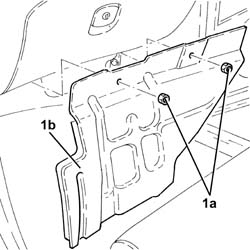
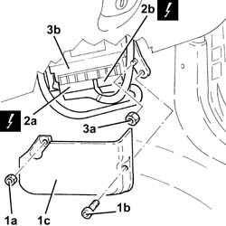
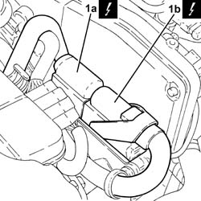
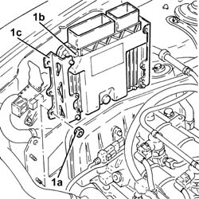
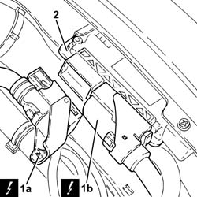

1060G80 ds electric injection control unit - r r
- Path
- Procedures > 10 ENGINE > 1060 DIESEL FUEL INJECTION > 1060G pressure pump electric control > 1060G80 ds electric injection control unit - r r
- Kind
- repair procedure (removal / refitting; the operation number is the code)
- Applies to
- engines: 1.9 JTD 8v , 1.9 JTD 16v, 2.4 JTD 10v, 2.4 JTD 20v; all production periods
- Interactive page
- https://sloeber94.github.io/elrnDB-a156/en/#/3237823
Applies to: engines: 1.9 JTD 8v , 2.4 JTD 10v; all production periods
 Removing
Removing
 Refitting
RefittingMake sure that the ignition is OFF (STOP position), then disconnect the negative battery terminal (refer to op. 5530B10 battery - r+r ).
 | Name | Connector |
|---|---|---|
- | Battery |
Working from the passenger compartment in the front passenger-side wheel arch compartment, unscrew the bolt and nut then remove the control unit protection.
Disconnect the electrical connections after turning the safety levers.
| Name | Connector |
|---|---|---|
- | Engine management ECU |
Unscrew the nuts and remove the diesel electronic injection system.
Applies to: engines: 1.9 JTD 8v , 2.4 JTD 10v; all production periods
Refitting
RemovingFit the diesel electronic injection system control unit and secure with nuts.
Connect the electrical connections to the control unit and turn the safety levers.
Fit the control unit protection and fix it using the bolt and nut.
Connect the battery terminal (-).
Applies to: engines: 1.9 JTD 8v ; all production periods; only with equipment: Euro 3
Removing
RefittingEnsure that the ignition key is in the stop OFF, then disconnect the battery negative terminal.
| Name | Connector |
|---|---|---|
- | Battery |
1. Undo the nuts (1a) and remove the soundproofing panel (1b).

Applies to: engines: 1.9 JTD 8v ; all production periods; only with equipment: Euro 3
1. Undo the nut (1a) and the bolt (1b) and remove the control unit protection (1c).
2. Disconnect the electrical connections (2a) and (2b) from the Diesel electronic injection control unit.
| Name | Connector |
|---|---|---|
2a | Engine management ECU |
| Name | Connector |
|---|---|---|
2b | Engine management ECU |
3. Unscrew the nuts (3a) and remove the diesel electronic injection system control unit (3b)

Applies to: engines: 1.9 JTD 8v ; all production periods; only with equipment: Euro 3
Refitting
RemovingPlace the diesel electronic injection control unit back in its housing and secure with nuts.
Connect the electrical connections to the diesel electronic injection control unit.
Place the control unit protection back in its housing and secure it using the nut and bolt.
Refit the soundproofing panel and fix it with the nuts.
Connect the battery terminal (-).
Applies to: engines: 2.4 JTD 10v; all production periods; only with equipment: Euro 3
Removing
RefittingEnsure that the ignition key is in the stop OFF, then disconnect the battery negative terminal.
| Name | Connector |
|---|---|---|
- | Battery |
1. Undo the nuts (1a) and remove the soundproofing panel (1b).
Applies to: engines: 2.4 JTD 10v; all production periods; only with equipment: Euro 3
1. Undo the nut (1a) and the bolt (1b) and remove the control unit protection (1c).
2. Disconnect the electrical connections (2a) and (2b) from the Diesel electronic injection control unit.
| Name | Connector |
|---|---|---|
2a | Engine management ECU |
| Name | Connector |
|---|---|---|
2b | Engine management ECU |
3. Unscrew the nuts (3a) and remove the diesel electronic injection system control unit (3b)
Applies to: engines: 2.4 JTD 10v; all production periods; only with equipment: Euro 3
Refitting
RemovingPlace the diesel electronic injection control unit back in its housing and secure with nuts.
Connect the electrical connections to the diesel electronic injection control unit.
Place the control unit protection back in its housing and secure it using the nut and bolt.
Refit the soundproofing panel and fix it with the nuts.
Connect the battery terminal (-).
Applies to: engines: 1.9 JTD 16v; all production periods
Removing
RefittingProceed with removal 1016A10 sound-proofing cover - r + r .
Ensure that the ignition key is in the OFF position, then disconnect the negative battery terminal (-).
| Name | Connector |
|---|---|---|
- | Battery |
1. Disconnect the electrical connections (1a) and (1b) from the diesel electronic injection system control unit.
| Name | Connector |
|---|---|---|
1a | Engine management ECU |
| Name | Connector |
|---|---|---|
1b | Engine management ECU |

Applies to: engines: 1.9 JTD 16v; all production periods
1. Undo the nuts (1a) and remove the diesel electronic injection system control unit (1b) complete with slides (1c).

Applies to: engines: 1.9 JTD 16v; all production periods
Refitting
RemovingPlace the diesel electronic injection control unit complete with slides back in its housing with its bracket and secure it using the nuts.
Connect the electrical connections to the diesel electronic injection control unit.
Connect the negative (-) battery terminal.
Proceed with refitting 1016A10 sound-proofing cover - r + r .
Applies to: engines: 2.4 JTD 20v; all production periods
Removing
RefittingEnsure that the ignition key is in the OFF position, then disconnect the negative battery terminal (-).
| Name | Connector |
|---|---|---|
- | Battery |
Undo the bolts and remove the control unit protection.
1. Disconnect the electrical connections (1a) and (1b) from the diesel electronic injection system control unit.
| Name | Connector |
|---|---|---|
1a | Engine management ECU |
| Name | Connector |
|---|---|---|
1b | Engine management ECU |
2. Remove the disel electronic injection system control unit, withdrawing it from its mounting.

Applies to: engines: 2.4 JTD 20v; all production periods
Refitting
RemovingPlace the diesel electronic injection control unit back in its housing.
Connect the electrical connections to the diesel electronic injection control unit.
Place the control unit protection back in its housing and secure it.
Connect the negative (-) battery terminal.
Topics linked from this page (6)
- 1016A10 sound-proofing cover - r + r
- 5530B10 battery - r+r
- A1B Battery ( BATTERY NEGATIVE )
- M10 Engine management ECU
- M10A Engine management ECU ( ENGINE )
- M10B Engine management ECU ( ENGINE )
Topics that link to this page (29)
- B10 ENGINE DOES NOT START / UNDER NO CIRCUMSTANCES
- B13 ENGINE STARTS WITH DIFFICULTY'
- B20 ENGINE STARTS, AND CUTS OUT STRAIGHT AWAY
- D03 ENGINE NOT RUNNING SMOOTHLY / (IRREGULAR OPERATION)
- D04 ENGINE NOT RUNNING SMOOTHLY
- D05 ENGINE DOES NOT PRODUCE BEST PERFORMANCE
- D10 ENGINE IDLE IRREGULAR
- K45 HEATER PLUGS WARNING LIGHT NOT WORKING
- 0510A10 cylinder compression - check for loose spark plugs or injectors
- 1016B10 single cylinder head extension - change gasket
- 1016C10 cylinder head - r + r and replace gasket
- 1020D14 front crank shaft oil seal cover - r + r and replace seals for versions with oil pump on crank shaft, timing side
- 1020D18 front crank shaft cover oil seal - replace
- 1028H10 connecting rod and piston set - r r
- 1032B10 toothed timing belt - r + r for timing adjustment or replacement
- 1032B46 toothed drive pulley - r + r
- 1032B52 toothed driven pulley (one) - r + r
- 1032C18 mobile timing system tensioner - r + r for 24 valve engines
- 1032C32 fixed timing system tensioner (one) r + r
- 1032D12 timing system protective cover(s) - r + r
- 1036C10 camshafts in cylinder head extension - r r - includes cylinder head extension replacement if necessary
- 1036L30 front oil seal of intake camshaft in cylinder head extension replace
- 1060E10 pressure pump - r r
- 1060E30 pressure pump pulley - r r
- 1060E40 supplementary pressure pump - r r
- 1072B10 inlet manifold - r + r and replace seal
- 1088C10 water pump - r + r
- 4130B32 power steering pump mount - r r
- 5040A76 tandem pipe for delivery and return from evaporator rr